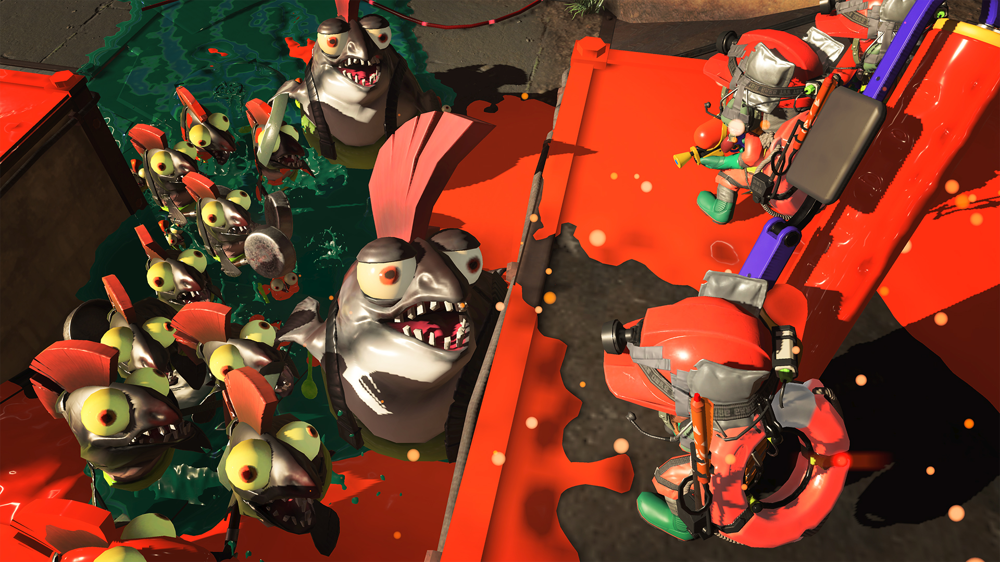
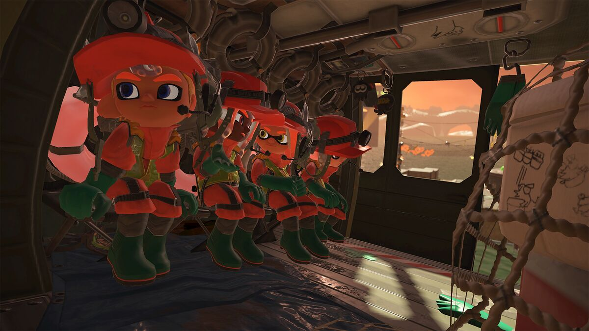
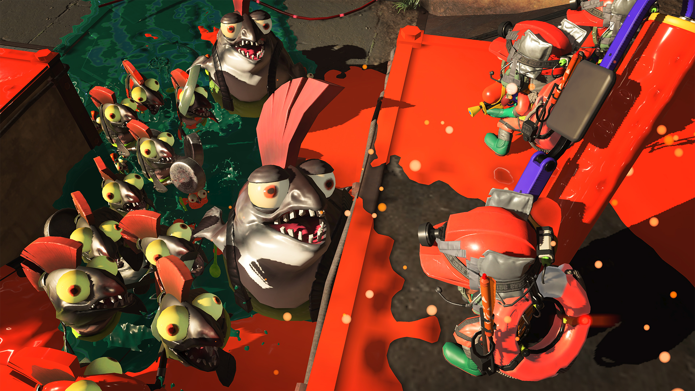
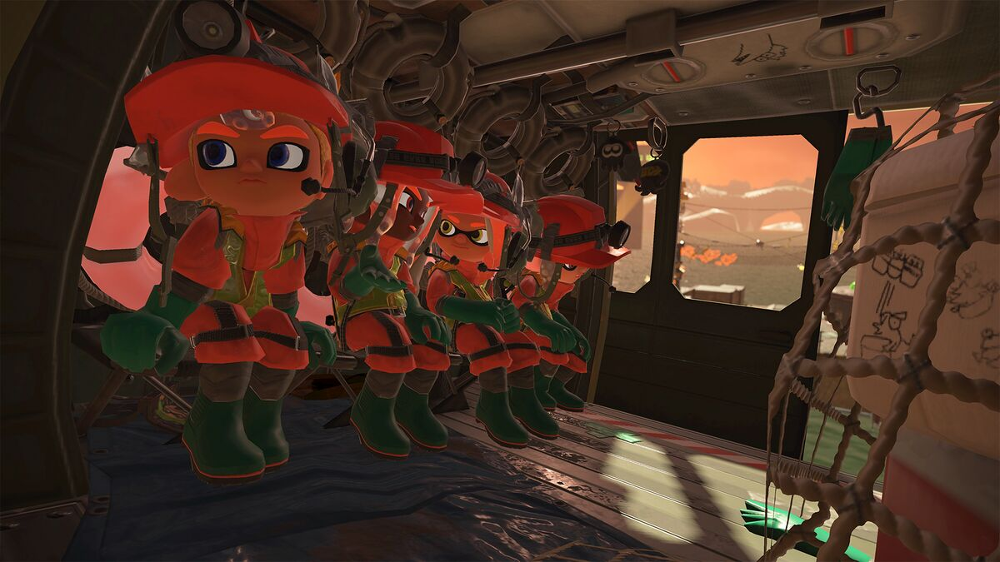
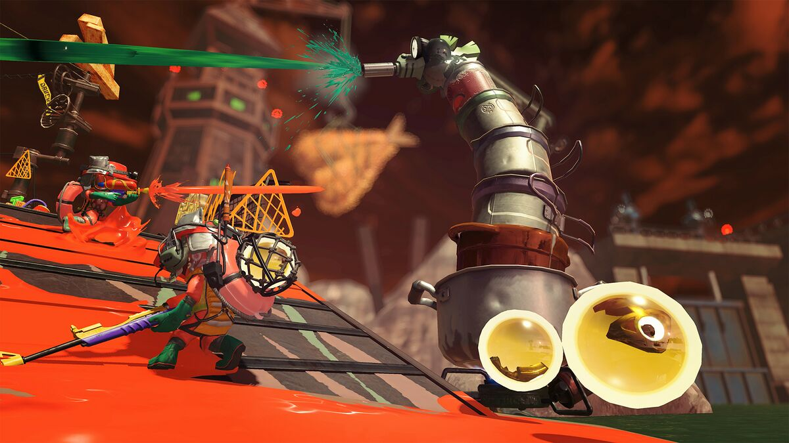
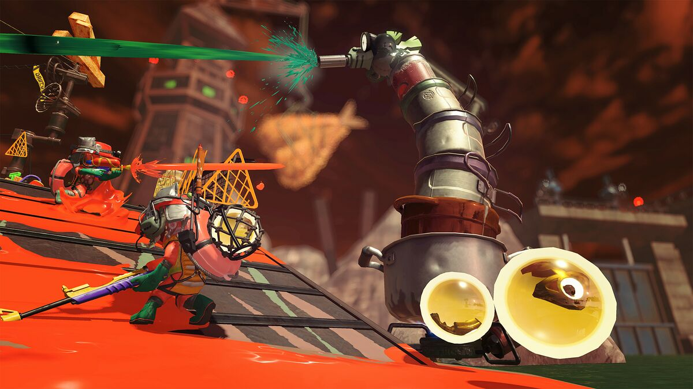

Cuando te unas a la plantilla de empleados, completarás un curso práctico de orientación. Al fin y al cabo, tampoco se espera de ti que memorices el manual palabra por palabra. En Don Oso, S. A. creemos que la experiencia es la madre de todas las ciencias.
Todo el conocimiento necesario sobre salmónidos se explica pormenorizadamente en la guía sobre salmónidos.
 





 


El comportamiento agresivo y predecible de los salmónidos se divide en oleadas, y el tiempo para alcanzar el cupo coincide con el final de cada oleada. Si se logra el cupo, se asigna uno nuevo.
En caso de no alcanzar el cupo o si los salmónidos derrotan a la cuadrilla durante una oleada, el turno se da por concluido antes de lo previsto, y los empleados regresan al punto base para recibir nuevas armas y atención médica.
Como integrante de la empresa, nos comprometemos a darte todo nuestro apoyo para que puedas plantar cara a las facetas más crueles de esta vida.
Juntos podemos hacer que nuestra empresa represente el cambio que tanto necesita este mundo. Juntos somos uno. Juntos somos Don Oso, S. A.